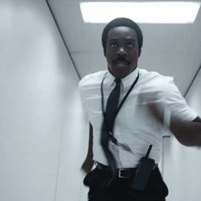
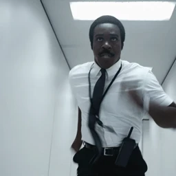

Original · 64px
The archived original emoji, enlarged for comparison.
The exact two-shot sequence recovered from a larger copy, aligned to the original square crop and running pace. No generated face or invented poses.
The archived original emoji, enlarged for comparison.

Clean source frames, center-cropped and aligned to the original loop.

The same footage enhanced on Replicate at 720px, delivered at 512px.
90 original frame holds · 50ms each · 4.5-second loop. Identical small-size frames may share a longer encoded hold. Original alpha retained frame by frame; this particular source is fully opaque. Recovered + Topaz is approved and promoted. The archived original and plain recovered version remain here for comparison.